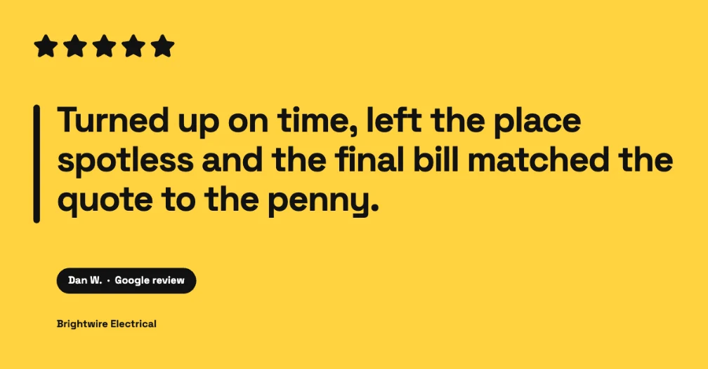
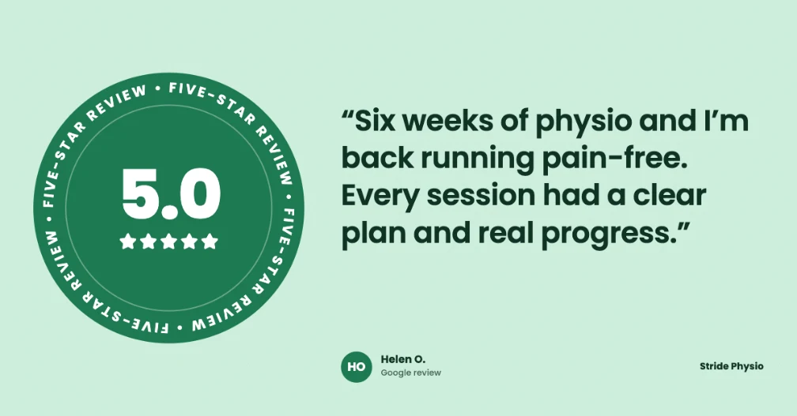

How to share Google reviews on LinkedIn
Pick a review that names a result a business buyer cares about, put it on a 1200×627 image with the star rating and the reviewer’s first name, and post it from your company page with a short caption about the problem you solved. Then share it from your own profile with a personal line. Once or twice a month is enough.
On Instagram, a review post says “people like us”. On LinkedIn it does a different job: it’s evidence. The people scrolling are often choosing a supplier, an accountant, a contractor or an agency, and a short review from a real client answers the question they can’t easily ask: will this firm actually deliver?
That changes which reviews you share, how you word the caption and where you post it.
Step 1: Choose a review that shows a result
“Lovely people, highly recommend” works for a café. LinkedIn readers want proof of an outcome. Look for reviews that mention:
- Time or money saved. “Sorted our year-end in a week” or “came in under the quote”.
- Reliability. Turning up on time, hitting a deadline, answering the phone.
- Clear communication. “Explained everything in plain English” removes a big worry for buyers.
- A before and after. “Wish we’d switched years ago” tells the reader what changed.
Google reviews for service businesses are often longer than café reviews. It’s fine to use one strong sentence, as long as you don’t change what the client meant.
Step 2: Use a size LinkedIn shows in full
| Format | Size (pixels) | Best for |
|---|---|---|
| Landscape image | 1200 × 627 | Shows in full on desktop and mobile. The safest default. |
| Square image | 1080 × 1080 | Takes up more of the feed on a phone. |
| Portrait image | 1080 × 1350 | Even more height on mobile, but can be trimmed on desktop. |
Because the landscape shape is wide and short, keep the text big and the review short. Two to four lines of review text is about the limit before it becomes hard to read on a phone.



LinkedIn-size review posts for an accountant, an electrician and a physio clinic, made with ReviewPost.
Step 3: Post from your company page, then share it personally
- Company page first. Post the image from your LinkedIn company page, so the review lives in your page’s feed for anyone checking you out.
- Then your own profile. Repost it with a sentence in your own words, such as what the project involved or what you learned. Posts from people usually reach more of their network than posts from company pages.
- Ask your team to react or comment in the first hour, with a genuine comment rather than “Great post!”.
If you’re a sole trader without a company page, post from your profile. It works just as well.
Step 4: Write a caption that doesn’t read like an ad
LinkedIn readers skim past anything that sounds like marketing. Lead with the client’s problem, let the review do the praising, and end with something useful.
Example (accountant): “A client came to us in March with two years of receipts in a shoebox and a tax deadline coming up. Lovely to read this one. 🙏 If your year-end feels like that, our first call is free and we’ll tell you honestly whether we can help.”
Example (trades): “We quote fixed prices for a reason. Nobody likes a surprise on the final bill. Thanks for the kind words, Dan!”
- Don’t open with “We’re thrilled to share…”. The first two lines show before “…more”, so make them the most interesting part.
- Use two or three relevant hashtags at most, like #SmallBusiness or your town or industry.
- Tag the client only with permission. A tag connects the post to their professional profile.
Step 5: Make it with one click (optional)
You can lay out a 1200×627 image in any design tool in about 15 minutes. ReviewPost does it from Google Maps in one click:
- Install the ReviewPost Chrome extension and add your website once. It picks up your brand colours.
- Open your business on Google Maps and click Make post under the review.
- Choose LinkedIn / Facebook (1200×627) as the size, pick a design and download.
Agencies managing several clients can save each client’s brand and switch between them.
How often to post
Once or twice a month is plenty. Mix review posts with other content, like a case study, a tip or a behind-the-scenes post, so your page reads as a business, not a testimonial wall. A review that matches what you’ve just written about (a tax deadline post followed by a happy accounts client) works especially well.
Keep it honest
Only share genuine reviews, keep the meaning of what the client wrote, and use first name and initial unless they’ve agreed to more. UK consumer law bans fake reviews and misleading edits to real ones, and on LinkedIn your personal reputation is attached to every post.
Common questions
What size should a review image be for LinkedIn?
1200×627 pixels (landscape) is LinkedIn’s standard image shape and displays in full on desktop and mobile. A 1080×1080 square also works well and takes up more of the feed on a phone.
Should I post reviews from my company page or my personal profile?
Both. Post the review from your company page so it lives there, then share it from your personal profile with a line of your own. Posts from people usually reach more of their network than posts from company pages.
Is it OK to tag the customer in a LinkedIn review post?
Only if they’ve agreed. On LinkedIn a tag links the post to someone’s professional profile, so ask first. Without permission, use their first name and initial, or their role and company type.
How often should I share reviews on LinkedIn?
Once or twice a month is plenty. LinkedIn audiences respond better to occasional, specific proof than to a stream of testimonials.
Make your first LinkedIn review post in one click
Free Chrome extension. No account needed. Works on Google Maps and Trustpilot.
Add ReviewPost to Chrome